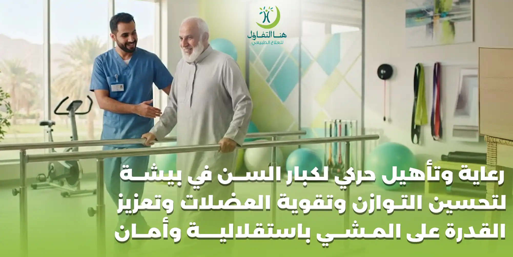

مع التقدم في العمر قد تحدث تغيرات طبيعية في القوة العضلية والمرونة والقدرة على التوازن والحركة، كما قد تترافق مرحلة التقدم في السن مع بعض الحالات الصحية مثل خشونة المفاصل، وآلام الظهر والرقبة، وهشاشة العظام، أو آثار الجلطات والإصابات والعمليات الجراحية.
لكن التقدم في العمر لا يعني بالضرورة فقدان القدرة على الحركة أو الاعتماد الكامل على الآخرين.
فالاهتمام بالنشاط البدني والتأهيل المناسب يمكن أن يساعد كبار السن على الحفاظ على قدراتهم الوظيفية وتحسين القوة والتوازن والحركة، ودعم الاستقلالية في الأنشطة اليومية وفق الحالة الصحية لكل شخص. وتوضح منظمة الصحة العالمية أن النشاط البدني المنتظم لدى كبار السن يرتبط بتحسين القدرة الوظيفية وتقليل مخاطر السقوط وتراجع صحة العظام والقدرة الوظيفية.
ومن هنا تأتي أهمية الرعاية والتأهيل الحركي لكبار السن، حيث لا يقتصر الهدف على علاج الألم، وإنما يمتد إلى مساعدة الشخص على أداء الأنشطة التي يحتاج إليها في حياته اليومية بصورة أكثر أمانًا واستقلالية.
ما المقصود بالتأهيل الحركي لكبار السن؟
التأهيل الحركي لكبار السن هو مجموعة من البرامج العلاجية والتأهيلية التي تهدف إلى تحسين أو المحافظة على القدرات الحركية والوظيفية للشخص المسن وفق حالته الصحية واحتياجاته.
وقد يركز البرنامج على:
- تحسين قوة العضلات.
- تحسين التوازن.
- تطوير القدرة على المشي.
- تحسين الحركة والمرونة.
- تدريب الانتقال من الجلوس إلى الوقوف.
- تحسين القدرة على صعود الدرج عند ملاءمة الحالة.
- تأهيل الحركة بعد الإصابات والكسور.
- التأهيل بعد العمليات الجراحية.
- دعم التعافي بعد الجلطات الدماغية.
- التعامل مع آثار قلة الحركة.
- تقليل بعض عوامل خطر السقوط.
- زيادة القدرة على أداء الأنشطة اليومية.
وتؤكد NHS أن العلاج الطبيعي يمكن أن يساعد على تحسين الحركة والقوة والقدرة على التحمل، ويُستخدم لدى كبار السن وفي حالات متعددة تؤثر على الحركة، كما يمكن أن يكون مفيدًا بعد العمليات الجراحية.
لماذا يحتاج كبار السن إلى التأهيل الحركي؟
ليس كل شخص كبير في السن يحتاج إلى برنامج تأهيلي، لكن وجود ضعف في الحركة أو التوازن أو القوة قد يجعل التقييم المتخصص مفيدًا.
وقد تظهر الحاجة إلى التأهيل عندما يلاحظ الشخص أو أسرته:
- صعوبة في المشي.
- الحاجة إلى مساعدة عند الوقوف.
- تكرار السقوط.
- الخوف من المشي.
- ضعف عضلات الساقين.
- صعوبة صعود أو نزول الدرج.
- صعوبة الانتقال من السرير إلى الكرسي.
- صعوبة أداء الأنشطة اليومية.
- ألم المفاصل.
- تيبس الحركة.
- ضعف التوازن.
- صعوبة العودة للحركة بعد فترة طويلة من الراحة أو المرض.
كما قد يحتاج الشخص إلى التأهيل بعد إصابة أو عملية أو جلطة أو كسر.
أهمية الحركة لكبار السن
الحركة المنتظمة جزء مهم من الحفاظ على الصحة والقدرة الوظيفية مع التقدم في العمر.
وتشير منظمة الصحة العالمية إلى أن النشاط البدني يساعد على تحسين الصحة العضلية والعظمية والوظيفية، كما يرتبط بانخفاض خطر السقوط والكسور المرتبطة به.
وبالنسبة لكبار السن الذين لديهم ضعف في الحركة، توصي منظمة الصحة العالمية بإدخال أنشطة تركز على التوازن والقوة الوظيفية ضمن النشاط البدني، مع مراعاة القدرة والحالة الصحية لكل شخص.
وهذا يجعل التأهيل الحركي أكثر من مجرد مجموعة تمارين؛ فهو وسيلة للمساعدة على الحفاظ على الوظيفة التي يحتاج إليها الشخص في حياته اليومية.
ضعف العضلات عند كبار السن وتأثيره على الحركة
قد يلاحظ الشخص مع التقدم في العمر انخفاضًا في قوة العضلات، وقد تصبح بعض الأنشطة التي كانت سهلة سابقًا أكثر صعوبة.
ومن أمثلة ذلك:
- صعوبة النهوض من الكرسي.
- صعوبة صعود الدرج.
- المشي لمسافات قصيرة والشعور بالتعب.
- الحاجة إلى الاتكاء أثناء الوقوف.
- صعوبة حمل بعض الأشياء.
- عدم الثبات أثناء المشي.
ولا يعني ظهور هذه المشكلات أن السبب هو العمر وحده؛ فقد ترتبط أيضًا بقلة النشاط أو أمراض مزمنة أو إصابات أو فترات طويلة من الراحة.
ولهذا يساعد التقييم على تحديد السبب والعوامل التي يمكن العمل عليها.
وتوضح NHS أن تمارين القوة والمرونة يمكن أن تساعد على زيادة قوة العضلات والحفاظ على كثافة العظام وتحسين التوازن وتقليل آلام المفاصل.
تأهيل ضعف التوازن عند كبار السن
التوازن عنصر أساسي في المشي والحركة اليومية.
وقد يؤدي ضعف التوازن إلى:
- زيادة الخوف من المشي.
- تجنب الخروج من المنزل.
- تقليل النشاط البدني.
- صعوبة تغيير الاتجاه.
- صعوبة الوقوف لفترات طويلة.
- زيادة احتمالية السقوط.
لذلك يمكن أن يتضمن برنامج التأهيل أنشطة موجهة لتحسين التوازن والتحكم في الجسم، بما يتناسب مع مستوى أمان الشخص وقدراته.
وتوصي منظمة الصحة العالمية بأن يشارك كبار السن في أنشطة متعددة المكونات تركز على التوازن الوظيفي وتقوية العضلات، خاصةً بهدف تحسين القدرة الوظيفية والمساعدة في الوقاية من السقوط.
تأهيل المشي لكبار السن
المشي من أهم المهارات الوظيفية التي تساعد الشخص على الاستقلالية.
وقد تتأثر القدرة على المشي بسبب:
- ضعف العضلات.
- خشونة المفاصل.
- ألم الركبة أو الورك.
- إصابات سابقة.
- الكسور.
- الجلطات الدماغية.
- اضطرابات التوازن.
- قلة الحركة.
- بعض الحالات العصبية.
ويبدأ تأهيل المشي بتقييم طريقة المشي والقدرة على تحمل الوزن والتوازن والقوة، ثم تحديد الأنشطة المناسبة.
التدريب على الوقوف
خصوصًا للشخص الذي يجد صعوبة في الانتقال من الجلوس إلى الوقوف.
التدريب على نقل الوزن
لتحسين التحكم أثناء الوقوف والمشي.
التدريب على الخطوات
وفق قدرة الشخص ومستوى الأمان.
تحسين التوازن أثناء المشي
من خلال أنشطة وظيفية مناسبة.
استخدام وسائل المساعدة
مثل العصا أو المشاية عند الحاجة، مع اختيار الوسيلة المناسبة وطريقة استخدامها بشكل صحيح.
العلاج الطبيعي لكبار السن بعد السقوط
السقوط من المشكلات المهمة لدى كبار السن، وقد ينتج عنه كسر أو إصابة أو خوف من تكرار السقوط.
وفي بعض الحالات، يؤدي الخوف بعد السقوط إلى تقليل الحركة، وهذا بدوره قد يساهم في زيادة الضعف وقلة القدرة على الحركة.
ولهذا قد يتضمن التأهيل بعد السقوط:
- تقييم التوازن.
- تقييم قوة العضلات.
- تقييم المشي.
- تدريب الانتقال والوقوف.
- تحسين الثبات.
- تدريب استخدام وسيلة المساعدة.
- مراجعة البيئة المحيطة من ناحية عوامل التعثر عند الحاجة.
وتوضح NHS أن خدمات تقييم السقوط قد تشمل تدريب القوة والتوازن، ومراجعة بعض العوامل التي تؤثر على التوازن، وتقييم سلامة المنزل ووسائل المساعدة على المشي.
التأهيل بعد الكسور لكبار السن
قد يحتاج كبير السن إلى فترة تأهيل بعد كسر في الورك أو الركبة أو الكاحل أو أحد الأطراف.
وقد تؤدي فترة التثبيت أو قلة الحركة إلى ضعف في العضلات وتراجع القدرة على المشي.
وبعد السماح الطبي المناسب، يمكن أن يساعد برنامج التأهيل على استعادة الحركة تدريجيًا.
وقد تشمل الخطة:
- استعادة الحركة.
- تقوية العضلات.
- التدريب على الوقوف.
- التدريب على المشي.
- تحسين التوازن.
- التدريب على استخدام وسائل المساعدة.
- العودة التدريجية للأنشطة اليومية.
وتختلف الخطة بحسب نوع الكسر والعلاج المستخدم وتعليمات الطبيب والحالة العامة للشخص.
العلاج الطبيعي لكبار السن بعد العمليات الجراحية
بعد بعض العمليات الجراحية، قد يحتاج الشخص إلى إعادة تأهيل لاستعادة الحركة والقوة والقدرة الوظيفية.
وقد يشمل ذلك العمليات المتعلقة بـ:
- الركبة.
- الورك.
- المفاصل.
- العظام.
- بعض العمليات التي تؤثر على الحركة.
وتؤكد NHS أن العلاج الطبيعي يمكن استخدامه لتحسين الحركة والقوة والقدرة على التحمل بعد الجراحة.
ويتم تحديد مستوى النشاط والتمارين وفق نوع العملية وتعليمات الطبيب ومرحلة التعافي.
التأهيل الحركي لكبار السن بعد الجلطات الدماغية
قد تترك الجلطات الدماغية آثارًا على الحركة والتوازن والقوة واستخدام أحد جانبي الجسم.
ولهذا قد يحتاج الشخص بعد الجلطة إلى برنامج تأهيلي متعدد التخصصات.
وقد يركز العلاج الطبيعي على:
- تحسين الحركة.
- التدريب على الوقوف.
- تحسين التوازن.
- تأهيل المشي.
- تقوية العضلات المناسبة.
- تحسين الانتقال بين الأوضاع.
- زيادة الاستقلالية.
وتوضح NHS أن العلاج الطبيعي يُستخدم للمساعدة في تحسين الحركة بعد السكتة الدماغية، ضمن خدمات التأهيل المناسبة للحالة.
ولا تكون الخطة واحدة لجميع المرضى، لأن آثار الجلطة تختلف حسب مكان الإصابة وشدتها والوظائف المتأثرة.
التأهيل لكبار السن المصابين بخشونة المفاصل
خشونة المفاصل من الحالات الشائعة مع التقدم في العمر، وقد تؤثر على:
- الركبة.
- الورك.
- اليدين.
- العمود الفقري.
- مفاصل أخرى.
وقد تؤدي إلى الألم والتيبس وصعوبة الحركة.
يمكن أن يتضمن التأهيل، وفق الحالة:
- تمارين الحركة.
- تقوية العضلات.
- التدريب الوظيفي.
- تحسين القدرة على المشي.
- توجيه الشخص إلى النشاط المناسب.
- تعليم استراتيجيات الحركة اليومية.
وتوضح NHS أن تمارين القوة والمرونة تساعد على زيادة قوة العضلات والحفاظ على صحة العظام وتحسين التوازن وتقليل آلام المفاصل.
علاج آلام المفاصل عند كبار السن
آلام المفاصل قد تؤدي إلى تقليل الحركة، لكن قلة الحركة لفترات طويلة قد تزيد من الضعف وتؤثر في القدرة الوظيفية.
لذلك لا يعتمد التعامل مع الألم دائمًا على الراحة فقط.
قد يحتاج الشخص إلى برنامج يجمع بين:
ويتم تحديد النشاط المناسب وفق سبب الألم وحالة المفصل والحالة الصحية العامة.
التأهيل بعد فترات طويلة من قلة الحركة
قد يقل نشاط الشخص لفترة طويلة بسبب:
- المرض.
- الدخول إلى المستشفى.
- الإصابة.
- الجراحة.
- الألم.
- الخوف من السقوط.
- الاعتماد على الآخرين.
وقد يؤدي ذلك إلى انخفاض القوة والتحمل.
وفي هذه الحالة قد تكون العودة للحركة تدريجية، بحيث يتم البدء بالأنشطة المناسبة للقدرة الحالية ثم زيادة مستوى النشاط تدريجيًا.
وتوصي منظمة الصحة العالمية كبار السن الذين لا يمارسون نشاطًا منتظمًا بالبدء بكميات صغيرة وزيادة المدة والتكرار والشدة تدريجيًا، وفق القدرة والحالة الصحية.
تمارين تقوية العضلات لكبار السن
تقوية العضلات من المكونات المهمة في برامج التأهيل الحركي، لكن التمارين يجب أن تتناسب مع قدرات الشخص.
وقد تشمل الأنشطة العلاجية:
- تمارين النهوض والجلوس.
- تدريبات عضلات الساقين.
- تدريبات التحكم في الجذع.
- تمارين مقاومة مناسبة.
- تدريبات الحركة الوظيفية.
- أنشطة مرتبطة بالمشي.
ولا يعني ذلك أن جميع كبار السن يجب أن يؤدوا التمارين نفسها.
فالشخص الذي يعاني من خشونة شديدة في الركبة يحتاج إلى برنامج مختلف عن الشخص الذي يتعافى من جلطة أو كسر.
تمارين التوازن لكبار السن
يمكن أن تركز تمارين التوازن على تحسين قدرة الشخص على التحكم في وضعية جسمه أثناء الوقوف والحركة.
وقد ترتبط التمارين بمهارات يومية مثل:
- الوقوف.
- تغيير الاتجاه.
- المشي.
- الوصول إلى الأشياء.
- الانتقال من كرسي إلى آخر.
وتوصي منظمة الصحة العالمية بأن تتضمن أنشطة كبار السن، وخصوصًا من لديهم ضعف في الحركة، مكونات تركز على التوازن والقوة للمساعدة في تحسين القدرة الوظيفية والوقاية من السقوط.
أهمية المرونة والحركة لكبار السن
قد يؤدي قلة الحركة إلى تيبس بعض المفاصل وصعوبة أداء الحركات اليومية.
لذلك قد يتضمن التأهيل تمارين للحفاظ على الحركة والمرونة وفق حالة الشخص.
وتشير NHS إلى أن تمارين القوة والمرونة تساعد في تحسين قوة العضلات والحفاظ على كثافة العظام وتحسين التوازن وتقليل بعض آلام المفاصل.
الرعاية الحركية لكبار السن لا تقتصر على التمارين
التأهيل الناجح لا يعني فقط تنفيذ التمارين داخل المركز.
فمن المهم النظر إلى طريقة حياة الشخص اليومية.
مثل:
- كيف ينهض من السرير؟
- كيف يجلس ويقف؟
- هل يستطيع المشي إلى الحمام بأمان؟
- هل يستطيع الدخول والخروج من السيارة؟
- هل يستطيع صعود الدرج؟
- هل يحتاج إلى عصا أو مشاية؟
- هل هناك عوائق في المنزل؟
- هل يستطيع أداء الأنشطة اليومية باستقلالية؟
لذلك تكون الأهداف الوظيفية جزءًا مهمًا من خطة التأهيل.
تدريب كبار السن على الاستقلالية في الحياة اليومية
الاستقلالية لا تعني بالضرورة أن الشخص يقوم بكل شيء دون أي مساعدة.
بل يمكن أن تعني أن الشخص يستطيع أداء أكبر قدر ممكن من أنشطته بأمان باستخدام الوسائل المناسبة.
وقد يركز التأهيل على:
- النهوض من الكرسي.
- الانتقال إلى السرير.
- المشي داخل المنزل.
- استخدام الدرج.
- الدخول إلى الحمام والخروج منه.
- ارتداء الملابس.
- الوصول إلى الأشياء.
- الحركة داخل المنزل وخارجه.
وسائل المساعدة على المشي لكبار السن
قد يحتاج بعض كبار السن إلى وسيلة مساعدة للحركة.
ومن أمثلتها:
- العصا.
- المشاية.
- العكازات في بعض الحالات.
- الكراسي المتحركة عند الحاجة.
لكن اختيار الوسيلة لا ينبغي أن يكون عشوائيًا.
فقد تكون العصا مناسبة لحالة معينة، بينما يحتاج شخص آخر إلى مشاية توفر دعمًا أكبر.
كما أن طريقة استخدام الوسيلة وارتفاعها ووضعها أثناء المشي مهمة لتحقيق أكبر قدر ممكن من الأمان.
وتشير NHS إلى أن استخدام وسائل المساعدة على المشي قد يكون جزءًا من خطة الوقاية من السقوط لبعض الأشخاص المعرضين له.
تأهيل كبار السن وتحسين الثقة أثناء المشي
بعد السقوط أو الإصابة، قد يصبح الشخص خائفًا من الحركة.
وقد يؤدي الخوف إلى تقليل النشاط، وهو ما قد يؤثر في القوة والتحمل.
لذلك قد يكون أحد أهداف التأهيل هو مساعدة الشخص على استعادة الثقة تدريجيًا من خلال:
- تدريب الوقوف.
- المشي في بيئة آمنة.
- تدريبات التوازن.
- استخدام وسيلة المساعدة المناسبة.
- زيادة مستوى النشاط تدريجيًا.
الوقاية من السقوط عند كبار السن
الوقاية من السقوط لا تعتمد على التمارين فقط.
يمكن النظر إلى مجموعة من العوامل، مثل:
قوة العضلات
ضعف العضلات قد يؤثر على القدرة على التحكم أثناء المشي.
التوازن
ضعف التوازن قد يزيد صعوبة الحركة.
الرؤية
مشكلات النظر قد تؤثر على القدرة على رؤية العوائق.
الأدوية
بعض الأدوية قد تؤثر في التوازن أو تسبب الدوخة لدى بعض الأشخاص، ولذلك ينبغي مناقشة ذلك مع الطبيب أو الصيدلي.
بيئة المنزل
السجاد غير الثابت والأسلاك والعوائق قد تزيد مخاطر التعثر.
الأحذية
الأحذية غير المناسبة قد تؤثر على الثبات.
وتذكر NHS عددًا من هذه العوامل ضمن إرشادات الوقاية من السقوط، ومنها النشاط البدني، والأحذية المناسبة، وإزالة العوائق المنزلية، واستخدام وسائل المساعدة عند الحاجة، ومراجعة الأدوية عند وجود مخاوف بشأن تأثيرها على التوازن.
أهمية البيئة الآمنة لكبار السن
حتى مع تحسن القوة والتوازن، يمكن أن تؤثر البيئة المحيطة على سلامة الشخص.
لذلك يمكن للأسرة مراجعة المنزل بحثًا عن:
- الأسلاك الممددة في أماكن المرور.
- السجاد غير الثابت.
- الإضاءة الضعيفة.
- الدرج غير الآمن.
- الحمام الذي لا يحتوي على وسائل دعم مناسبة.
- الأشياء الموضوعة في أماكن يصعب الوصول إليها.
وقد تكون بعض التعديلات البسيطة مفيدة في تقليل عوامل التعثر والسقوط.
هل يجب على كبير السن ممارسة الرياضة؟
النشاط البدني مفيد لكبار السن عندما يكون مناسبًا لقدراتهم وحالتهم الصحية.
وتوصي منظمة الصحة العالمية بأن يكون كبار السن نشطين بدنيًا وفق قدراتهم، مع دمج أنشطة القوة والتوازن ضمن الأسبوع.
كما توصي NHS الأشخاص الذين تزيد أعمارهم على 65 عامًا بالنشاط اليومي وفق القدرة، مع أنشطة لتحسين القوة والتوازن والمرونة على الأقل يومين أسبوعيًا، وتؤكد أهمية تعديل النشاط عند وجود حالة صحية أو مخاوف.
ملاحظة:
لكن هذه توصيات عامة وليست وصفة علاجية لشخص بعينه؛ فالشخص المصاب بمرض أو بعد عملية أو إصابة يحتاج إلى تحديد النشاط المناسب لحالته.
متى يحتاج كبير السن إلى تقييم متخصص؟
يُفضل طلب تقييم عند وجود:
- ضعف واضح في العضلات.
- صعوبة جديدة في المشي.
- تكرار السقوط.
- دوخة تؤثر على الحركة.
- صعوبة في النهوض من الكرسي.
- صعوبة في صعود الدرج.
- ألم يمنع الحركة.
- فقدان القدرة على أداء نشاط كان يؤديه سابقًا.
- فترة طويلة من عدم الحركة.
- التعافي من كسر أو عملية.
- آثار جلطة دماغية.
- تراجع واضح في التوازن.
أهمية التقييم قبل بدء برنامج التأهيل
لا يوجد برنامج واحد يناسب كل كبار السن.
لذلك يبدأ التأهيل بالتقييم، وقد يشمل:
تقييم القوة
لمعرفة مستوى قوة العضلات وتحديد المناطق التي تحتاج إلى تدريب.
تقييم التوازن
لمعرفة مدى قدرة الشخص على الوقوف والتحكم في جسمه.
تقييم المشي
ملاحظة طريقة المشي وسرعته ومستوى الأمان.
تقييم مدى الحركة
فحص حركة المفاصل والمناطق التي تعاني من تيبس أو محدودية.
تقييم القدرة الوظيفية
معرفة الأنشطة التي يستطيع الشخص القيام بها والأنشطة التي يحتاج فيها إلى مساعدة.
تحديد الأهداف
مثل تحسين المشي، أو تقليل الاعتماد على الآخرين، أو العودة إلى النشاط اليومي.
كيف يتم تصميم برنامج الرعاية والتأهيل الحركي لكبار السن؟
يمكن أن يمر البرنامج بعدة مراحل:
المرحلة الأولى: التقييم
التعرف على الحالة الصحية والحركية والأهداف.
المرحلة الثانية: تحديد الأولويات
هل المشكلة الأساسية هي الألم؟ أم ضعف العضلات؟ أم التوازن؟ أم المشي؟
المرحلة الثالثة: بدء التدريب
يتم اختيار الأنشطة المناسبة لقدرة الشخص.
المرحلة الرابعة: التدريب الوظيفي
ربط التمارين بالأنشطة اليومية.
المرحلة الخامسة: التدرج
زيادة مستوى النشاط تدريجيًا حسب الاستجابة.
المرحلة السادسة: إعادة التقييم
متابعة التطور وتعديل البرنامج عند الحاجة.
دور الأسرة في تأهيل كبار السن
الأسرة عنصر مهم جدًا في نجاح رحلة التأهيل.
ويمكن للأسرة المساعدة من خلال:
- تشجيع الحركة المناسبة.
- توفير بيئة آمنة.
- الالتزام بتعليمات الفريق المعالج.
- مساعدة الشخص دون منعه من أداء ما يستطيع القيام به بنفسه.
- التأكد من استخدام وسائل المساعدة بالطريقة الصحيحة.
- مراقبة أي تغيرات جديدة في الحركة.
- تشجيع الالتزام بالبرنامج المنزلي إذا تم وصفه.
والهدف هو المساعدة دون تحويل الشخص إلى شخص يعتمد على الآخرين في كل شيء.
الفرق بين الرعاية والتأهيل الحركي لكبار السن والرعاية التقليدية
الرعاية التقليدية قد تركز على مساعدة الشخص في أداء احتياجاته اليومية، بينما يركز التأهيل الحركي على تطوير أو المحافظة على القدرات التي تمكنه من أداء هذه الأنشطة بنفسه قدر الإمكان.
فمثلًا:
- بدلًا من مساعدة الشخص دائمًا على النهوض من الكرسي، يمكن أن يكون الهدف التأهيلي هو تدريبه على النهوض بأمان إذا كانت حالته تسمح بذلك.
- وبدلًا من تجنب المشي خوفًا من السقوط، يمكن تقييم سبب عدم الثبات وتدريب الشخص على المشي بطريقة أكثر أمانًا عندما يكون ذلك مناسبًا.
الرعاية والتأهيل بعد الخروج من المستشفى
قد يعود كبير السن إلى المنزل بعد مرض أو عملية أو إصابة وهو أضعف من حالته السابقة.
وقد يحتاج إلى برنامج تدريجي لاستعادة:
- القوة.
- التوازن.
- القدرة على المشي.
- القدرة على الانتقال.
- التحمل.
- الاستقلالية.
وتشير NHS إلى استخدام العلاج الطبيعي لتحسين الحركة والقوة والقدرة على التحمل بعد الجراحة، وكذلك في العديد من الحالات التي تؤثر على الحركة.
هل التأهيل الحركي مناسب لكبار السن المصابين بأمراض مزمنة؟
وجود مرض مزمن لا يعني بالضرورة عدم القدرة على ممارسة النشاط أو الاستفادة من التأهيل.
لكن يجب أن تكون الأنشطة مناسبة للحالة الصحية.
وتوضح منظمة الصحة العالمية أن كبار السن الذين لديهم حالات صحية مزمنة ينبغي أن يكونوا نشطين بالقدر الذي تسمح به قدراتهم وحالتهم، مع تعديل مستوى الجهد وفق مستوى اللياقة والحالة الصحية.
لذلك يجب إبلاغ الأخصائي بالتاريخ الصحي والأدوية والمشكلات الحالية قبل وضع البرنامج.
الرعاية والتأهيل الحركي لكبار السن في بيشة مع هنا التفاؤل
في مركز هنا التفاؤل للعلاج الطبيعي والتأهيل الطبي في بيشة، تركز برامج التأهيل الحركي لكبار السن على فهم حالة الشخص واحتياجاته اليومية قبل تحديد أهداف العلاج.
وقد تشمل برامج الرعاية والتأهيل:
- تقوية العضلات.
- تحسين التوازن.
- تأهيل المشي.
- التدريب على الوقوف والجلوس.
- تحسين الحركة.
- تأهيل ما بعد الكسور.
- التأهيل بعد العمليات.
- التأهيل بعد الجلطات.
- التعامل مع ضعف الحركة.
- تحسين القدرة على أداء الأنشطة اليومية.
- التدريب على استخدام وسائل المساعدة عند الحاجة.
ويتم اختيار الأنشطة وفق الحالة وقدرة الشخص، مع التدرج في مستوى التدريب ومتابعة التطور.
لماذا التأهيل الوظيفي مهم لكبير السن؟
لأن الهدف النهائي ليس أن يؤدي الشخص التمرين بشكل جيد داخل الجلسة فقط.
الهدف أن يستطيع استخدام قدراته خارج الجلسة.
فإذا تحسنت قوة الساقين، نريد أن ينعكس ذلك على:
وهنا تظهر أهمية التدريب الوظيفي، لأنه يربط التأهيل باحتياجات الحياة اليومية.
هل يمكن لكبير السن أن يستعيد جزءًا من استقلاليته بعد فترة من الضعف؟
قد يستطيع بعض الأشخاص تحسين قدراتهم الوظيفية مع برنامج تأهيلي مناسب، لكن مقدار التحسن يختلف حسب السبب والحالة الصحية ومدة قلة الحركة والقدرات الحالية.
ولا ينبغي إعطاء وعد بنتيجة محددة قبل تقييم الحالة.
لكن الهدف من التأهيل هو الوصول إلى أفضل مستوى وظيفي ممكن للشخص، سواء كان ذلك المشي بصورة أفضل، أو الانتقال باستقلالية أكبر، أو استخدام وسيلة مساعدة بطريقة أكثر أمانًا.
متى يجب إيقاف التمرين وطلب التقييم الطبي؟
يجب الانتباه إلى الأعراض الجديدة أو غير المعتادة أثناء النشاط.
ومن المهم طلب التقييم الطبي عند ظهور أعراض مثل:
- ألم صدر.
- ضيق تنفس شديد أو غير معتاد.
- دوخة شديدة أو إغماء.
- ضعف مفاجئ.
- اضطراب مفاجئ في الكلام.
- ألم شديد جديد.
- سقوط مع إصابة واضحة.
تنبيه هام:
ولا ينبغي اعتبار هذه الأعراض جزءًا طبيعيًا من جلسة التأهيل.
أسئلة شائعة عن الرعاية والتأهيل الحركي لكبار السن
ابدأ رحلة التأهيل الحركي لكبار السن بخطة تناسب الحالة
الحفاظ على الحركة والاستقلالية من أهم الأهداف التي يمكن العمل عليها مع التقدم في العمر. في هنا التفاؤل للعلاج الطبيعي والتأهيل الطبي في بيشة، يتم التركيز على احتياجات كل شخص وأهدافه اليومية، سواء كان الهدف هو تحسين المشي، أو استعادة الحركة بعد إصابة أو عملية، أو تقوية العضلات، أو تحسين التوازن، أو دعم الاستقلالية في الأنشطة اليومية.
احجز موعد تقييم لك أو لأحد أفراد أسرتك وابدأ بخطة تأهيل حركي مبنية على الحالة والقدرات الفعلية.